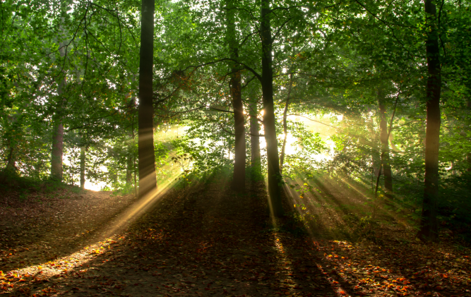

Decides que Mike debe dormir en el bosque.
Sin ver una salida del bosque, Mike busca unos arbustos para refugiarse y pasar la noche. Es riesgoso, pero no tiene otra opción.
Después de una larga y tenebrosa noche, Mike se despierta con la luz del sol brillando entre los árboles. Siente un gran alivio
por haber sobrevivido la noche, y rápidamente se dirige hacia la salida del bosque, olvidando por completo los ruidos que lo
habían llevado a investigar el bosque en el primer lugar.
Después de una larga caminata, Mike ha regresado a su colonia sano y salvo, pero todavía necesita recuperarse por la experiencia que vivió.
Fin.